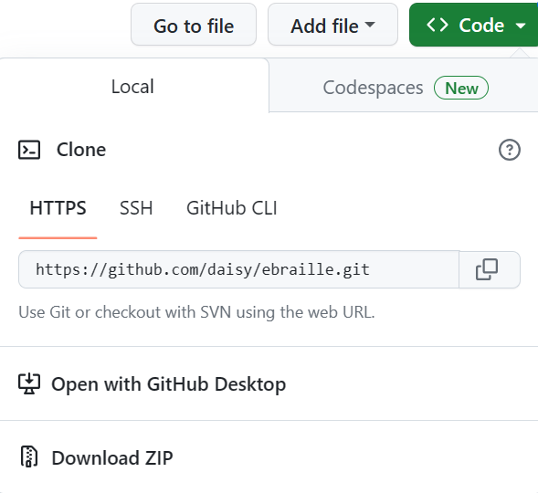
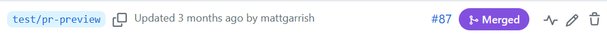
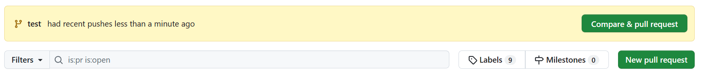
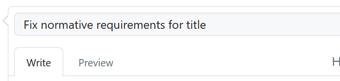
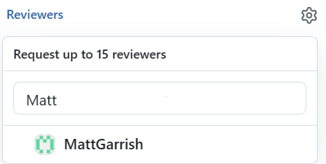
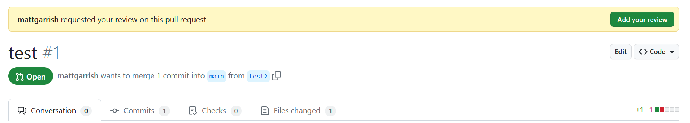

Using GitHub
Introduction
GitHub is a cloud-based service that uses git repositories to store and manage development projects. It is also a web site through which you can easily maintain repositories.
Although commonly thought of as a home for open-source code projects, GitHub is useful for any project where versioning and tracking of documents is important. It is for this reason that DAISY, W3C, and other publishers use GitHub for document development.
GitHub (the web site) includes some web-based tools for editing files in a repository, but it is more common for developers to download repositories to their local machines to work on and then submit their changes back to the site. This makes it easy to collaborate with others through the web site and track what is happening.
This section goes through the process of checking out and working on the files in a repository, as this is how you will manage the writing and editing of DAISY specifications. As there are many tools available to simplify the document management process, this guide focuses on the underlying git commands. Once you understand these commands, you will find it much easier to understand the graphical user interfaces to GitHub.
Tools for managing repositories
The following list introduces some of the most common tools used to manage GitHub repositories. You will need to install at least one of these tools before you will be able to checkout files and edit them.
- Git command line
-
The git command line is the most basic way to interact with git repositories.
If you are comfortable with command line tools and do not mind memorizing the various git commands, it may be all you need to manage your work locally.
- GitHub Desktop
-
The GitHub desktop is an application that runs on your local computer. It provides a graphical user interface for checking out repositories and maintaining the files in them. As it comes integrated with GitHub and sets up a connection with your user account, it is very beginner friendly.
One bonus of installing GitHub desktop is that it will install the git command line for you, so you can switch to the command line without having to run a separate install.
- TortoiseGit
-
TortoiseGit is an application that runs on Windows systems. It integrates with your right-click context menu, allowing you to manage repositories from the file system explorer.
In addition to providing easy access to many common git commands, TortoiseGit also uses icon overlays to display which folders and files have changes. Unfortunately, these overlays are only accessible to sighted users.
- GitHub web site
-
Although the GitHub web site is not an installable application, and does not directly allow you to download repositories, it does provide some basic tools for maintaining repositories and editing files.
The GitHub site is the only way to open and comment on pull requests, for example, so you cannot avoid using it. It also allows you to do light modifications on files if you are in a hurry, but it is not recommended for extensive editing.
Specification editing workflow
The typical GitHub workflow for editing a specification is as follows:
- Clone the repository to your local machine.
- Create a branch to work in.
- Edit the file(s).
- Commit your changes.
- Push your changes back to the site.
- Open a pull request.
- Repeat from step 2 as needed.
The following sections will go into these steps in more detail.
Cloning repositories
Cloning a repository downloads a copy of the repository to your local machine. Cloning is the preferred work mode for DAISY specifications.
The two most common ways to clone a repository are directly from GitHub and from the git command line.
- From the GitHub web site:
-
- Go to the site for the repository.
-
Click on the "
<> Code" button.GitHub code tab 
Description
The image shows the top of the eBraille repository as it appears on the GitHub web site. The green "Code" button is rendered at the right edge of the page on a line of links and buttons after the repository name.
(Note for screen reader users that this "button" is actually a
detailselement styled like a button.) -
From the drop-down menu, select "Open with GitHub Desktop" to download. (If you are using a different application, this link should open that program instead; you do not have to install GitHub Desktop for this step.)
Code menu Description
The image shows the clone option that appears by default in the drop-down menu box. The URL for the repository is shown followed by a link to open with GitHub desktop and a link to download a ZIP file with the source.
- You will be prompted where to save the repository on your local filesystem.
Do not download the zipped source. This option only gives you the files without any of the other necessary repository information for your git tools to work with them.
- From the git command line:
-
- Create a directory for your repositories if necessary.
- Open the command line terminal for your operating system.
- Switch to the directory from step 1.
- Open the GitHub web site for the repository in your browser and copy the URL.
-
Clone the repository with the command:
git clone <URL>Replacing "<URL>" with the URL from step 4.
git will automatically create a new subdirectory for the source files using the name of the repository.
Another process for working on a repository is called forking. Forking a repository makes a copy of the repository under your GitHub account. You then clone that repository and work on it and make a pull request back to the source repository when you are done.
Forking is typically only used when you do not have access to edit the source repository. If you need access to a DAISY repository, make a request to DAISY staff.
Branches
Overview
Branches are like copies of the repository source that allow you to work on files without directly changing the primary source. After you have finished making all your changes, you request that your changes be merged back into the source (through what is called a "pull request").
All DAISY specification should be done through branches and pull requests. Do not work directly in the "main" branch (the primary source) as it does not give others a chance to review your changes.
Create a branch
When creating a branch, try to give it a short but unique name. For example, name the branch after the issue number it addresses.
You can also add a prefix using a slash to the name make branches more specific (e.g., "metadata/explain-title").
Branch names must not contain spaces. Some tools will allow you to enter spaces in the name but will convert them to dashes when creating the actual branch.
This section reviews creating branches from the GitHub web site and the command line, but most applications for managing repositories can simplify this process for you.
- From the GitHub web site:
-
- Go to the "Code" tab of the repository.
-
Click the button that shows the main branch.
Main branch button 
Description
The image shows the main branch button. It is positioned under the name of the repository on the Code tab.
(Note for screenreader users that this "button" is actually a
detailselement with the summary "Click branches or tags".) -
Type a name for your branch in the input box.
Branch input field 
Description
The image shows the drop-down field after clicking on the main branch button. There is a text input field followed by the names of some existing branches.
-
Click the option to create the branch.
Branch create option 
Description
The image shows the option to create the branch that appears once a name has been typed into the input field.
When creating a branch on the GitHub web site, you will need to pull the change to your local repository and switch to the branch before editing the files.
- From the git command line:
-
- Open the command line terminal for your operating system.
- Switch to the root of the directory containing the repository source.
- Make sure the "main" branch is checked out when creating new branches (see for more information).
-
Create and switch to the new branch with the command:
git checkout -b [branch-name]Replacing "[branch-name]" with the name for your branch.
-
Push the new branch to GitHub with the command:
git push [branch-name]
Switching branches
Following are some common commands for switching branches from the git command line:
-
To switch to an existing branch, run:
git checkout [branch-name](Replacing "[branch-name]" with the actual name of the branch.)
-
To switch to the main branch, run:
git checkout main -
To view the current branch you are in, run:
git branch --show-current
Deleting branches
If you are no longer using a branch, delete it — stale branches are confusing to sift through later.
Branches in DAISY repositories are typically set to be deleted automatically when a pull request is merged. You do not need to delete these manually.
- From the GitHub web site:
-
- Go to the Code tab of the repository
-
Below the repository name is a count of branches. Click on this text to load the list of branches.
List of branches
Description
The image shows the number of branches in the repository (3). The link is beside the button to add branches.
-
Locate the branch you want to delete from the list on the new page.
Branch entry with delete button Description
The image shows an entry for a branch named "test/pr-preview". At the end of the entry is the garbage can icon for deleting the branch.
- Click on the garbage can icon next to the branch — the button has label "Delete" followed by the branch name.
- From the git command line:
-
To delete a branch from the command line, run the command:
git push origin –-delete [branch-name]Replacing "[branch-name]" with the name of the branch to delete.
Managing changes
Pulling the latest updates
Running a "pull" command gets the latest commits, branches, etc., from the source repository.
To perform a pull command, run:
git pullYou should always run a pull command before starting new work on a specification to ensure your copy of the repository is up to date.
If you create a branch in GitHub, you need to run a pull command first before you can check it out to work on it.
Committing changes
Committing your changes saves them with git. Some people like to commit often (e.g., with each minor change) while other prefer to commit only when they are done all their changes. Either approach is fine.
To make a commit, run:
git commit –a –m "explanatory message"The "-a" flag in the preceding commands "adds" all changed files to your commit.
Although a bit counter-intuitive, you must "add" changed files even if they already exist in the
repository.
The "-m" flag indicates the commit includes an explanatory message. For DAISY
specifications, please always describe your commits. The description does not need to be long,
but should make clear what you are committing.
Making commits does not push the changes to GitHub. Until you push them to the GitHub server, the changes will only exist in your local copy of the repository.
File maintenance
Although most commits involve edits to a specification, it is also common to make changes to the file structure of a repository (e.g., add images to a specification, or move or rename files). The following list details some common file maintenance commands. Running these commands still requires a commit.
-
To add a single file to the repository, run:
git add filename.xyz -
To add all unversioned files, run:
git add -a -
To check for unversioned files, run:
git ls-files --other -
To delete a file, run:
git rm filename.xyz -
To rename a file, run:
git mv oldname.xyz newname.xyz
Stashing changes
Sometimes you may need to change branches or work on another issue while in the middle of editing. If you are not ready to commit the changes you have made, another option is to stash them.
Stashing your changes stores them away in a stack and returns your branch to an unmodified state.
When you return to the branch and are ready to continue editing, you can then "pop" the changes from the stash. (Note that you can pop the changes anywhere you want, so you can also pop the branches in a new branch if you prefer to start anew.)
The most common stash commands are:
-
To stash changes, run:
git stashor
git stash save "reminder message"It is best to add a message to remind you what you were working on, as it is easy to forget what is in the stash if you have to go away to another issue for a long time.
-
To view the list of stashed changes, run:
git stash list -
To pop the top-most changes, run:
git pop
Pushing changes
To store your changes (commits) on GitHub, you have to "push" them to the server.
To push commits, run:
git push origin [branch-name]Replacing "[branch-name]" with the name of the branch you are working in.
As with committing, some people prefer to push their changes often while others prefer to wait until they are done. An advantage of pushing changes to GitHub often is that you know they are securely saved in case anything happens to your machine. A disadvantage is that undoing a commit once you have pushed it is more complicated (this is a bigger problem if you are working directly in the "main" branch where changes can go live right away).
Pushing your changes to GitHub does not open a pull request to review and integrate your updates. That is the final step in the process.
Pull requests
This section assumes you will use the GitHub web site, but GitHub Desktop can also manage pull requests.
Many third-party tools, such as the git command line and TortoiseGit, are not able to create pull requests in GitHub.
Opening a pull request
A pull request is the final step in the editing process. After you have made all your edits, you need to open a pull request to have them merged back into the source specification.
To open a pull request from the GitHub web site:
-
Go to the "Pull requests" tab of the repository on GitHub.
-
GitHub should offer to open a new pull request for the changes. If not, click the "New pull request" button.
Alert to open pull request Description
The image shows the alert field that appears when you go to the pull request tab in GitHub after pushing changes to a branch. If this alert is no present, the "New pull request" button is visible in the row of options beneath the alert.
-
Add a descriptive title for your pull request.
Example title for a pull request  -
Describe the changes as fully as you can.
If the changes fix an issue in the GitHub issue tracker, add "Fixes #xx" to the description (replacing xx with the actual issue number). This will automatically close the issue when the pull request is merged.
Example description for a pull request 
-
Click the "Create pull request" button after the description box to open the pull request.
Create pull request button 
Request reviews
Pull requests should always be reviewed by at least one other editor before merging. If you do not request a review, editors may not be aware you want their input.
It is best to pick editors also involved with the issue you are addressing, but if in doubt never worry about asking for too many reviewers.
To request a review, follow these steps:
-
Go to the "Reviewers" section in the pull request tab and click on the cog beside the heading.
Pull request reviewers section 
Description
Beside the "Reviewers" heading is a grey cog icon. Clicking anywhere on the heading or icon will activate the field.
-
Enter the GitHub usernames of the people you want to review. As each user account appears, click on the name to add the person as a reviewer.
Selecting reviewers Description
A text input field contains the name "Matt". Below the field, GitHub shows the suggested reviewer "MattGarrish".
When you select a user, a checkbox appears beside their account name.
Selected reviewer with checkmark 
-
After adding all reviewers, exit the field to update the list.
Reviewing pull requests
If someone requests you review their pull request, follow these steps to add your review:
-
Open the pull request to review.
-
Click on the "Add your review" button if GitHub prompts you or select the "Files changed" tab.
Review prompt Description
A GitHub alert box indicates who has requested the review and provides a button to add your review (opens the Files changed tab). A manual link to the files changed tab is also in the row of buttons below the alert.
-
Review the GitHub diffs of the files. You can also go to the first comment in the pull request to find links to an alternative preview and diff of the changes, but any comments need to be made against the GitHub diffs.
-
To comment on a changed line, click the plus (+) button at the start of it (labelled "Add line comment").
Reviewing edits 
Description
The image shows that the plus button for a line has been clicked and a new dialog box is open where you can comment on the change. After entering a comment, the "Add single comment" and "Start review" buttons beneath the input field become active.
The first time you add a comment you will be asked whether you want to start a review or leave a single comment. Chose "Start a review" if you expect to add more than one comment, otherwise click "Add single comment".
-
When you have reviewed all the changes, click the "Finish your review" button to post your comments.
Finishing a review 
Description
The image shows the "Finish your review" button has been clicked and a new dialog is open beneath it. It has a text input field for additional comments and options to indicate you are approving, commenting, or requesting changes. The "Submit review" button is last in the dialog.
If you did not add any comments, select "Approve" and then click the "Submit review" button.
If you added comments, select "Comment" if they are only suggestions or "Request changes" if they are problems that must be fixed.
To make general comments not specific to the changed source, use the text box at the bottom of the Conversation tab.
Editing a pull request
Sometimes you might want to make a change to another person's pull request – for example, to fix a typo, or modify the text after a discussion.
Editing pull requests is no different from editing your own branches — you are just working in someone else's branch.
To edit a pull request, follow these steps:
- Pull the latest data.
- Check out the branch used to create the pull request (you can get this information from the pull request).
- Modify the files.
- Commit and push the changes.
The pull request is automatically updated with each commit; you do not have to reopen or update it.
When editing someone else's pull request, make sure your commit messages thoroughly describe what you are doing. You should also add detailed comments to the pull request.
Merging pull requests
If you are an editor, you can merge your pull request after receiving at least one approval.
If you are not an editor, let the editors decide when to merge.
To merge a pull request, go to the pull request tab, open the pull request, and click on the "Merge pull request" button.
When a pull request is merged, it may affect the ability to merge other open pull requests. If GitHub is unsure how to merge the open changes with the ones that have been integrated, it will flag you that there is a merge conflict.
GitHub allows you to edit merge conflicts from the web site, but if you are unsure about this process, please contact DAISY staff to help.